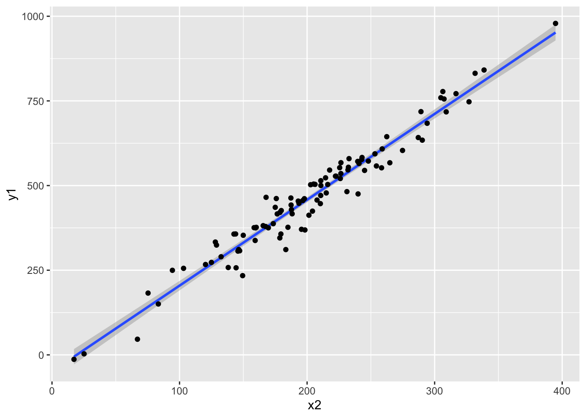
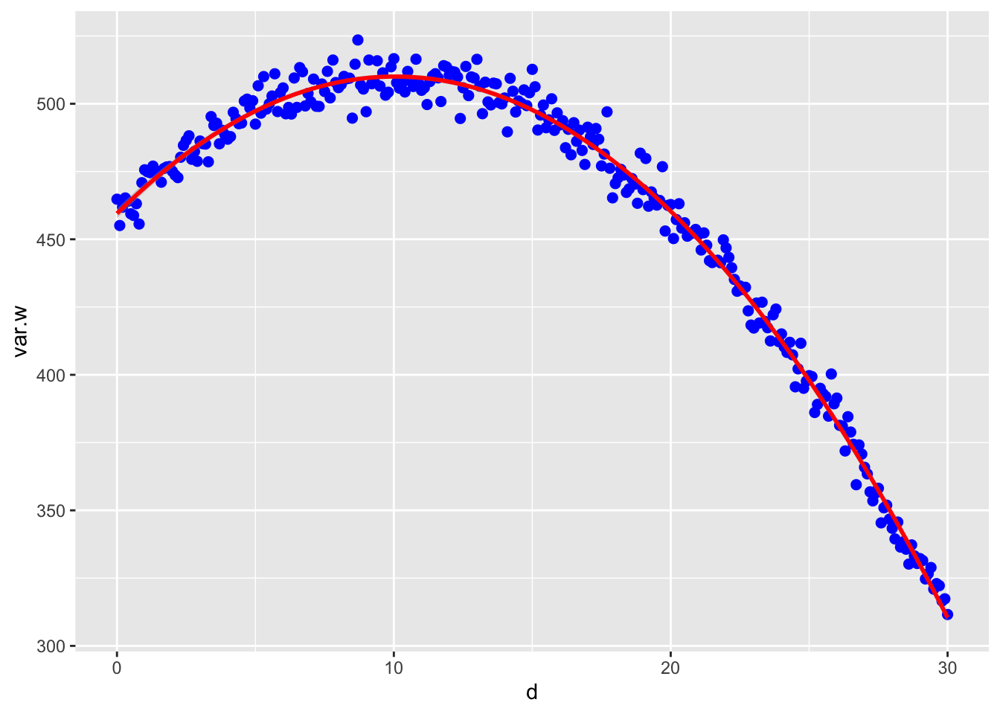

Aptitud_Darwiniana
1/25/2022
Aptitud Darwiniana. (Darwinian Fitness)
En esta sección estaremos evaluando diferentes alternativas para considerar el potencial evolutivo de diferentes especies.
Aquí encontrarán preguntas para ayudar a enfocar el aprendizaje de los conceptos
- ¿Qué es la evolución?
- La evolución es el termino en biología para expresar que los organismos biológicos cambian de genética y morfología en el tiempo. (La palabra evolución no es un sinónimo a selección natural)
- ¿Qué es la selección natural?
La selección natural es uno de dos procesos que llevan a la evolución. Para que puede ocurre la selleción natural se necesita tres condiciones.
- variación morfológica entre individuos
- que la morfología tenga una asociación a la genética (para que sea hereditaria la morfología)
- variación en adecuación entre individuos asociado a unos morfotipos (que los individuos dejan diferentes progenies viables)
- ¿Qué es la deriva genética?
- la deriva genética también es un proceso que puede llevar a la evolución (cambio a través del tiempo). Al contrario de la selección natural, el cambio no es un resultado de adecuación diferencial pero de procesos al azar.
- variación morfológica entre individuos
- que la morfología tenga una asociación a la genética (para que sea hereditaria la morfología)
- ¿Cual son alternativas para evaluar el potencial evolutivo de plantas y animales en el campo?
- El método de mejor valor para medir la selección natural requiere que uno sigue los padres, los, y sus hijos. En otra palabra contabilizar la que los individuos de los padres sean también efectivo a dejar progenies.
- Considera un individuo que produce 1000 semillas y ninguna de estas semillas logra ellos reproducirse, por consecuencia los padres su esfuerzo darwiniana es cero, vs. un individuo produce 10 semillas y 10 de esas semillas produce semillas también, ese padre tuvo un impacto grande en dejar sus genes a la próxima generación.
Métodos matemático para medir la adcuación darwiniana:
vea este enlace para medirla Adecuación
Adecuación Absoluta
La aptitud absoluta (W) de un fenotipo o genotipo se define como el cambio proporcional en la abundancia de ese fenotipo o genotipo durante una generación atribuible a la selección. Por ejemplo, si \(n(t)\) es la abundancia de un genotipo en la generación \(t\) en una población infinitamente grande (para que no haya deriva genética).
\[ n(t + 1) = Wn(t)\] Una aptitud absoluta mayor de 1 indica crecimiento en la abundancia de ese fenotipo o genotipo; una aptitud absoluta menor que 1 indica disminución. Es el cambio en la abundancia de un fenotipo o genotipo.
Adecuación relativa
La adecuación relativa \(w\) determina el cambio en frecuencia de fenotipo o genotipo. Si la población total en la generación \(t\) y la el fenotipo/genotipo tiene una frecuencia de \[p(t)=\frac{n_t}{N_t},\]
entonces la adecuación de un individuo al comarar con los otros fenotipos/genotipos o individuos es \[w_i=\frac{W_i}{\overline{w}}\] Nota que 1 es la adecuación promedio de la población, y los valores menor de 1, son menos apto a dejar progenies versus los que tiene un valor mayor de 1 son más apto a dejar progenies.
Aptitud Darwniana
La aptitud darwiniana (a menudo denotada con el w en los modelos de genética de poblaciones) es la representación cuantitativa de la selección natural y sexual dentro de la biología evolutiva. Puede definirse ya sea con respecto a un genotipo o un fenotipo en un ambiente dado. En cualquier caso, describe el éxito reproductivo individual y es igual a la contribución promedio al acervo genético de la próxima generación que realizan los individuos del genotipo o fenotipo especificado. La aptitud de un genotipo se manifiesta a través de su fenotipo. La aptitud de un fenotipo dado también puede ser diferente en diferentes entornos selectivos.
La selección natural tiende a hacer que los alelos/fenotipos con mayor aptitud sean más comunes con el tiempo, lo que da como resultado la evolución darwiniana.
El término “aptitud darwiniana” se puede utilizar para aclarar la distinción con la aptitud física. La aptitud no incluye una medida de supervivencia o duración de la vida, pero el resultado de dejar progenie a la próxima generación. La conocida frase de Herbert Spencer “supervivencia del más apto” debe interpretarse como: “Supervivencia de la forma (fenotípica o genotípica) que dejará la mayor cantidad de copias de sí misma en generaciones sucesivas”.
Tres modelos de selección natural
Hay tres modelos básicos de selección natural.
Selección direcional
La selección direcional se refiere que hay una ventaja para los individuos que sean más pequeño o más grande.


Selección estabilizadora
La selección estabilizadora es que hay ventaja evolutiva para los individuos que estén en el centro y no los valores más pequeños y más grande.

Selección disruptiva.
La selección disruptiva es que son los individuos más pequeños y más grande que tienen ventaja y no los del centro de la distribución.

Medir la aptitud relativa de los individuos:
Los Datos
- Por lo menos una variable continua (la variable en x, independiende)
- Un indice de adecuación fitness (número de frutos, tiempo de vida, tamaño de las crias, supervivencia, etc)
- Calcular el promedio de fitness de todo los individuos
- Dividir el indice de adecuación \(W_i\) individual por el promedio \(\overline{w}\) (esto sera su Aptitud Darwiniana relativa) de cada individuo.
Aquí esta los datos
library(readxl)
library(gt)
Example_Aptitud_Darwiniana <- read_excel("Example_Aptitud_Darwiniana.xlsx")
gt(head(Example_Aptitud_Darwiniana)) #Usar head() para ver los datos| Variable_Continua | Esfuerzo_Reproductivo | W_Aptitud_Darwiniana |
|---|---|---|
| 1.1 | 10 | 1.20 |
| 2.0 | 8 | 0.96 |
| 3.3 | 5 | 0.60 |
| 1.6 | 12 | 1.44 |
| 2.3 | 4 | 0.48 |
| 1.9 | 11 | 1.32 |
Poner los datos en una tabla en R
library(tidyverse)
datos=tribble(
~ variable_continua, ~ Esfuerzo_Reproductivo,
1.1, 10,
2.0, 8,
3.3, 5,
1.6, 12,
2.3, 4,
1.9, 11
)
datos## # A tibble: 6 × 2
## variable_continua Esfuerzo_Reproductivo
## <dbl> <dbl>
## 1 1.1 10
## 2 2 8
## 3 3.3 5
## 4 1.6 12
## 5 2.3 4
## 6 1.9 11Abajo los script para calcular los Los scripts para calcular la ultima columna si no la ha calculado anteriormente
# calcular el promedio del Esfuerzo_Reproductivo
promedio=mean(Example_Aptitud_Darwiniana$Esfuerzo_Reproductivo, na.rm = TRUE)
promedio # en promedio cada individuo tiene x numero de Esfurzo reproductive## [1] 8.333333# AHORA crear una nueva columna con W_Aptitud
Example_Aptitud_Darwiniana$W_Aptitud=Example_Aptitud_Darwiniana$Esfuerzo_Reproductivo/promedio
# vea los datos
head(Example_Aptitud_Darwiniana)## # A tibble: 6 × 4
## Variable_Continua Esfuerzo_Reproductivo W_Aptitud_Darwiniana W_Aptitud
## <dbl> <dbl> <dbl> <dbl>
## 1 1.1 10 1.2 1.2
## 2 2 8 0.96 0.96
## 3 3.3 5 0.6 0.6
## 4 1.6 12 1.44 1.44
## 5 2.3 4 0.48 0.48
## 6 1.9 11 1.32 1.32Regresión lineal simple
Evaluar la relación de forma virtual
library(ggplot2)
ggplot(Example_Aptitud_Darwiniana, aes(Variable_Continua, W_Aptitud))+
geom_point() + # poner los puntos
geom_smooth(method=lm) # poner una regresion lineal## `geom_smooth()` using formula 'y ~ x'### Probar de si hay selección para la variable continua
Vea la siguiente linea
Coefficients: Estimate Std. Error t value Pr(>|t|) Variable_Continua -0.3864 0.1800 -2.147 0.09832.
Si el valor de p (Pr(>|t|)) es < 0.05 hay selección por la variable, en este caso NO hay selección pq el valor es mayor de 0.05.
model1=lm(W_Aptitud~Variable_Continua, data=Example_Aptitud_Darwiniana)
summary(model1)##
## Call:
## lm(formula = W_Aptitud ~ Variable_Continua, data = Example_Aptitud_Darwiniana)
##
## Residuals:
## 1 2 3 4 5 6
## -0.16068 -0.05288 0.08949 0.27254 -0.41695 0.26847
##
## Coefficients:
## Estimate Std. Error t value Pr(>|t|)
## (Intercept) 1.7858 0.3858 4.629 0.00981 **
## Variable_Continua -0.3864 0.1800 -2.147 0.09832 .
## ---
## Signif. codes: 0 '***' 0.001 '**' 0.01 '*' 0.05 '.' 0.1 ' ' 1
##
## Residual standard error: 0.2987 on 4 degrees of freedom
## Multiple R-squared: 0.5354, Adjusted R-squared: 0.4192
## F-statistic: 4.609 on 1 and 4 DF, p-value: 0.09832Regresión cuadratura
Nota aqui que en geom_smooth se añade el polinomio que uno quiere en este caso cuadratico formula=y~poly(x,2)
ggplot(Example_Aptitud_Darwiniana,aes(x=Variable_Continua)) +
geom_point(aes(y = W_Aptitud)) +
stat_smooth(aes(y = W_Aptitud),method = "lm", formula = y ~ x + I(x^2))La prueba estadística para determinar si hay selección disruptiva o estabilizadora.
model2=lm(W_Aptitud~Variable_Continua+I(Variable_Continua^2), data=Example_Aptitud_Darwiniana)
summary(model2)##
## Call:
## lm(formula = W_Aptitud ~ Variable_Continua + I(Variable_Continua^2),
## data = Example_Aptitud_Darwiniana)
##
## Residuals:
## 1 2 3 4 5 6
## -0.17543 -0.04473 0.07821 0.27418 -0.40778 0.27555
##
## Coefficients:
## Estimate Std. Error t value Pr(>|t|)
## (Intercept) 1.86890 1.30211 1.435 0.247
## Variable_Continua -0.46880 1.22994 -0.381 0.728
## I(Variable_Continua^2) 0.01836 0.27024 0.068 0.950
##
## Residual standard error: 0.3446 on 3 degrees of freedom
## Multiple R-squared: 0.5361, Adjusted R-squared: 0.2268
## F-statistic: 1.733 on 2 and 3 DF, p-value: 0.316